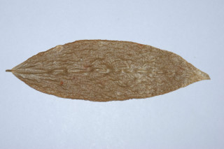
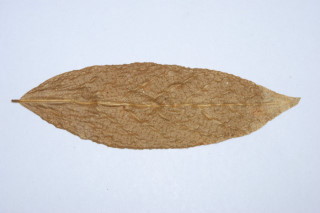
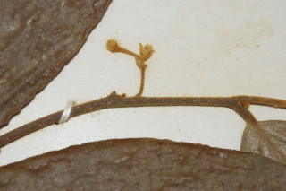
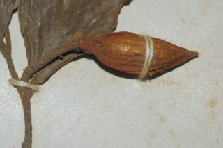
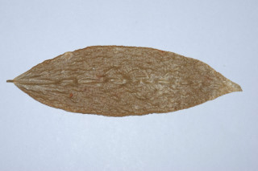
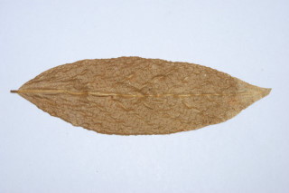
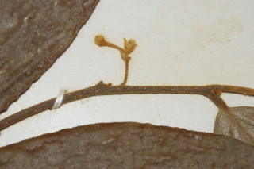
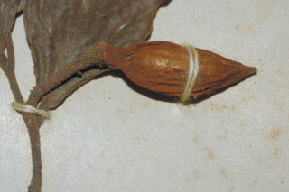

Images :
 







| Habit : | Shrubs or Small trees , up to 5 m tall. |
| Leaves : | Leaves simple , alternate , distichous ; petiole 0.2-0.4 cm long, pubescent , nearly terete ; lamina 6-12.5 x 2-5 cm, narrow elliptic to oblong , apex acuminate with blunt tip, base acute , sometimes rounded , margin entire , young leaves shaggy on both sides, older leaves sparsely shaggy beneath; secondary_nerves 6-9 pairs, prominent, oblique ; tertiary_nerves close, percurrent . |
| Inflorescence / Flower : | Flowers 3-4 together, axillary or extra-axillary , pedicels 1-2 cm long, pubescent . |
| Fruit and Seed : | Clustered 1-seeded berries , oblong , red, scrobiculate . |